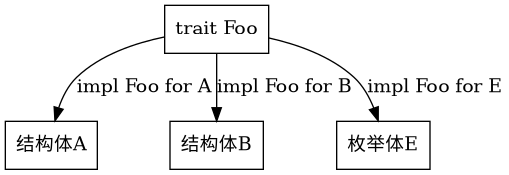

Rust编程之道
Table of Contents
1 历史
Rust的出现主要是用来解决两个难题：
- 很难编写内存安全的代码
- 很难编写线程安全的代码
设计人员对于这门语言的期望
- 必须是更加安全、不易崩溃的，尤其是在操作内存时
- 不需要有垃圾回收这样的系统
- 应该拥有一系列的广泛特效，这些特性之间又不乏一致性。这些特性可以很好地相互协作，从而使该语言更容易编写、维护和调试
设计哲学
- 内存安全
- 零成本抽象
- 实用性
Rust团队维护三个发行分支：稳定版（Stable）、测试版（Beta）和开发版（Nightly）。
Rust商业用户：
Amazon，使用Rust作为构建工具 Atlassian，在后端实用Rust Dropbox，在前后端均实用了Rust Facebook，使用Rust重写了源码管理工具 Google，在Fuchsia项目中部分实用了Rust Microsoft，在Azure IoT网络上部分使用了Rust npm，在其核心服务上使用了Rust RedHat，使用Rust创建了新的存储系统 Reddit，使用Rust处理评论 Twitter，在构建团队中使用Rust 等等
2 语言精要
2.1 Rust语言的基本构成
2.1.1 语言规范
由Rust语言参考（The Rust Reference）和RFC文档共同构成。
2.1.2 编译器
Rust是一门静态编译型语言。Rust官方的编译器叫rustc。
rustc有如下特点：
- rustc是跨平台的应用程序
- rustc支持交叉编译
- rustc使用LLVM作为编译器后端
- rustc是用Rust语言开发的，包含在Rust语言源码中
- rustc对Rust源码进行词法语法分析、静态类型检查，最终将代码翻译为LLVM IR
2.1.3 核心库
Rust语言的语法由核心库和标准库共同提供的。其中Rust核心库是标准库的基础。核心库中定义的是Rust语言的核心，不依赖于操作系统和网络等相关的库，甚至不知道堆分配，也不提供并发和I/O。
可以通过在模块顶部引入 #![nostd] 来使用核心库。
做嵌入式应用开发的时候，核心库是必须的
2.1.4 标准库
标准库包含的内容大概如下：
- 与核心库一样的基本trait、原始数据类型、功能型数据类型和常用宏等，以及与核心库几乎完全一致的API
- 并发、I/O和运行时
- 平台抽象
- 底层操作借口
- 可选和错误处理类型Option和Result，以及各种迭代器
2.2 语句和表达式
Rust中的语法可以分为两大类：
- 语句（Statement），是指要执行的一些操作和产生副作用的表达式
- 声明语句（Declaration statement）
- 表达式语句（Expression statement）
- 表达式（Expression），主要用于计算求值
2.3 变量与绑定
let创建的变量一般称为绑定（Binding），它表明了标识符（Identifier）和值（Value）之间建立的一种关联关系
2.3.1 位置表达式和值表达式
2.3.2 不可变绑定和可变绑定
使用let关键字声明的位置表达式默认不可变，为不可变绑定。需要加上关键字 mut 表示可变绑定
fn main(){ let a = 1; // a = 2; // immutable and error let mub b = 2; b = 3; // mutable }
2.3.3 所有权与引用
fn main(){ let place1 = "place1"; let place2 = "place2"; let other1 = place1; // 所有权（OwnerShip）转移，称为移动（Move）语义 let other2 = &place2; // 引用 println!("place1 {:p} other1 {:p}",place1,other1); println!("place2 {:p} other2 {:p}",place2,*other2); assert_eq!(place1,other1); assert_eq!(place2,*other2); }
2.4 函数与闭包
2.4.1 函数定义
函数是通过关键字 fn 定义的
2.4.2 作用域与生命周期
Rust语言的作用域是静态作用域，即词法作用域（Lexical Scope）。由一对花括号来开辟作用域，其中用域在词法分析阶段就已经确定了，不会动态改变。
fn main(){ let v = "hello world!"; assert_eq!(v, "hello world!"); let v = "hello rust!"; assert_eq!(v, "hello rust!"); { // 变量屏蔽（Variable Shadow） let v = "hello world!"; asser_eq!(v, "hello world!"); } assert_eq!(v "hello rust!"); }
2.4.3 函数指针
函数自身可以作为函数的参数和返回值使用
pub fn math(op: fn(i32, i32) -> i32, a: i32, b: i32) -> i32 { op(a, b) } fn sum(a: i32, b: i32) -> i32 { a + b } fn product(a: i32, b: i32) -> i32 { a * b } fn main() { let a = 2; let b = 3; assert_eq!(math(sum, a, b), 5); assert_eq!(math(product, a, b), 6); }
fn is_true() -> bool { true} fn true_maker() -> fn() -> bool{is_true} fn main(){ assert_eq!(true_maker()(), true); }
2.4.4 CTFE机制
Rust编译器也可以像C++和D语言那样，拥有编译时函数执行（Compile-Time Function Execution，CTFE）的能力
Rust 2018版本已经集成进去，2015版的时候，需要加 #![feature (constfn)] 特性（使用Nightly版本）
const fn init_len() -> usize { return 5; } fn main(){ let arr = [0; init_len()]; // init_len必须在编译期求值，这就是CTFE的能力 }
2.4.5 闭包
闭包也叫匿名函数，具有以下特点：
- 可以像函数一样被调用
- 可以捕获上下文环境中的自由变量
- 可以自动推断输入和返回的类型
fn main() { let out = 42; fn add(i: i32, j: i32) -> i32 { i + j } let closure_annotated = |i: i32, j: i32| -> i32 { i + j + out }; let closure_inferred = |i, j| i + j + out; let i = 1; let j = 2; assert_eq!(3, add(i, j)); assert_eq!(45, closure_annotated(i, j)); assert_eq!(45, closure_inferred(i, j)); }
闭包和函数有一个重要的区别，那就是闭包可以捕获外部变量，而函数不可以。
闭包作为参数的情况
fn closure_math<F:Fn()->i32>(op:F)->i32{ op() } fn main(){ let a=2; let b=3; assert_eq!(closure_math(|| a+b),5); assert_eq!(closure_math(|| a*b),6); }
closuremath其参数是一个泛型F，并且该泛型受Fn()->i32 trait的限定
闭包作为返回值
fn two_times_impl() -> impl Fn(i32) -> i32{ let i = 2; move |j| j*i } fn main(){ let result = two_times_impl(); assert_eq!(result(2), 4); }
使用move关键字，将捕获变量地所有权转移到闭包中，就不会按引用进行捕获变量，这样闭包才可以安全地返回
2.5 流程控制
2.5.1 条件表达式
fn main(){ let n = 13; let big_n = if (n < 10 && n > -10) { 10 * n }else { n / 2 // 因为类型已经是i32，所以小数部分会被编译器截去 }; assert_eq!(big_n, 6); }
2.5.2 循环表达式
- while
- loop
- for…in，本质上是一个迭代器
fn main() { for n in 1..101 { if n % 15 == 0 { println!("fizzbuzz"); }else if n % 3 == 0 { println!("fizz"); }else if n % 5 == 0 { println!("buzz"); }else { println!("{}", n); } } }
fn while_true(x:i32)->i32{ while true{ return x+1; } x } fn main(){ let y = while_true(5); assert_eq!(y,6); }
2.5.3 match表达式与模式匹配
fn main() { let number = 42; match number { 0 => println!("Origin"), 1...3 => println!("A11"), | 5 | 7 | 13 => println!("Bad Luck"), n @ 42 => println!("Answer is {}", n), // @可以将模式中的值绑定给一个变量 _ => println!("Common"), } }
2.5.4 if let和while let表达式
使用if let表达式
fn main(){ let boolean = true; let mut binary = 0; if let true = boolean { binary = 1; } assert_eq!(binary, 1); }
使用match表达式
fn main(){ let mut v = vec![1,2,3,4,5]; loop { match v.pop() { Some(x) => println!("{}", x), None => break, // 跳出循环 } } }
使用while let表达式
fn main() { let mut v = vec![1,2,3,4,5]; while let Some(x) = v.pop() { println!("{}", x); } }
2.6 基本数据类型
- 布尔类型
- bool（true,false）
- 基本数字类型
- 固定大小
- u8,u16,u32,u64,u128
- i8,i16,i32,i64,i128
- 动态大小，取决于机器的字长
- usize
- isize
- 浮点数
- f32,f64
- 固定大小
- 字符类型，Char
- 数组类型，Array，数组的特点
- 数组大小固定
- 元素均为同类型
- 默认不可变
- 范围类型，Range
- 1..5 => [1,5) => 1,2,3,4
- 1..=5 => [1,5] => 1,2,3,4,5
- 切片类型，Slice，用[T]类型表示连续序列，那么切片类型就是&[T]和&mut[T]
- str字符串类型
- 指针，可以表示内存地址的类型称为指针
- 引用（Reference）
- 原生指针（Raw Pointer），主要用于Unsafe Rust中
- 函数指针（fn Pointer）
- 智能指针（Smart Pointer）
原生指针实例
fn main() { let mut x = 10; let ptr_x = &mut x as *mut i32; let y = Box::new(20); let ptr_y = &*y as *const i32; unsafe { *ptr_x += *ptr_y; } assert_eq!(x, 30); }
2.7 复合数据类型
- 元组（Tuple），是一种异构有限序列，形如（T,U,M,N)
- 结构体（Struct）
- 具名结构体（Named-Field Struct）
- 元组结构体（Tuple-Like Struct）
- 单元结构体（Unit-Like Struct）
- 枚举体（Enum）
- 无参数枚举体
- 类C枚举体
- 携带类型参数的枚举体
- 联合体（Union）
2.8 常用集合类型
Rust标准库std::collections模块下有4种通用集合类型
- 线性序列
- 向量（Vec）
- 双端队列（VecDeque）
- 链表（LinkedList）
- Key-Value映射表
- 无序哈希表（HashMap）
- 有序哈希表（BTreeMap）
- 集合类型
- 无序集合（HashSet）
- 有序集合（BTreeSet）
- 优先队列
- 二叉堆（BinaryHeap）
2.9 智能指针
它源自C++，Rust将其引入，并使之成为Rust语言中最重要的一种数据结构。
Box<T>是指向类型为T的堆内存分配值的智能指针。当Box<T>超出作用域范围时，将调用其析构函数，销毁内部对象，并自动释放堆中的内存。
Box<T>在堆内存中分配值的实例：
fn main() { #[derive(PartialEq,Debug)] struct Point { x:f64, y:f64, } let box_point = Box::new(Point{x:0.0,y:0.0}); let unboxed_point:Point = *box_point; assert_eq!(unboxed_point, Point{x:0.0,y:0.0}); }
2.10 泛型和trait
Rust标准库中定义了很多泛型类型，包括Option<T>、Vec<T>、HashMap<K,V>以及Box<T>等。
trait是借鉴了Haskell的Typeclass。trait是对类型行为的抽象。
- trait是Rust唯一的接口抽象方式
- 可以静态生成，也可以动态调用
- 可以当作标记类型拥有某些特定行为的标签来使用
trait实例：
struct Duck; struct Pig; trait Fly{ fn fly(&self)->bool; } impl Fly for Duck { fn fly(&self) ->bool { return true; } } impl Fly for Pig { fn fly(&self) ->bool { return false; } } fn fly_static<T:Fly>(s:T)->bool { s.fly() } fn fly_dyn(s:&Fly)->bool { s.fly() } fn main() { let pig = Pig; assert_eq!(fly_static::<Pig>(pig),false); let duck = Duck; assert_eq!(fly_static::<Duck>(duck),true); assert_eq!(fly_dyn(&Pig),false); assert_eq!(fly_dyn(&Duck),true); }
实现Debug trait
use std::fmt::*; struct Point { x:i32, y:i32, } impl Debug for Point { fn fmt(&self, f: &mut Formatter) -> Result { write!(f, "Point {{x: {}, y: {}}}", self.x, self.y) } } fn main() { let origin = Point {x:0,y:0}; println!("The origin is: {:?}", origin); }
2.11 错误处理
Rust中的错误处理是通过返回Result<T,E>类型的方式进行的。Result<T,E>类型是Option<T>类型的升级版本，同样定义于标准库中。
fn main() { let x:Result<i32, &str> = Ok(-3); assert_eq!(x.is_ok(), true); let x:Result<i32, &str> = Err("Some error message"); assert_eq!(x.is_ok(), false); }
2.12 表达式优先级
略
2.13 注释与打印
- 普通的注释
- 使用//对整行注释
- 使用/*…*/对区块注释
- 文档注释，内部支持Markdown标记，也支持对文档中的示例代码进行测试，可以使用rustdoc工具生成HTML文档
- 使用///注释可以生成库文档，一般用于函数或结构体的说明，置于说明对象的上方
- 使用//!也可以生成库文档，一般用于说明整个模块的功能，置于模块文件的头部
println!宏中的格式化形式列表：
- nothing代表Display，println!("{}",2)
- ?代表Debug，println!("{:?}",2)
- o代表八进制，println!("{:o}",2)
- x代表十六进制，println!("{:x}",2)
- X代表十六进制大写，println!("{:X}",2)
- p代表指针，println!("{:p}",2)
- b代表二进制，println!("{:b}",2)
- e代表指数小写，println!("{:e}",2)
- E代表指数大写，println!("{:E}",2)
3 类型系统
3.1 通用概念
所谓类型，其实就是对表示信息的值进行的细粒度的区分。
3.1.1 类型系统的作用
类型系统的优势
- 排查错误
- 抽象
- 文档
- 优化效率
- 类型安全
- 类型安全的语言可以避免类型间的无效计算
- 类型安全的语言还可以保证内存安全，避免诸如空指针、悬垂指针和缓存区溢出等导致的内存安全问题
- 类型安全的语言也可以避免语义上的逻辑错误
3.1.2 类型系统的分类
在编译期进行类型检查的语言属于静态类型，在运行期进行类型检查的语言属于动态类型。如果一门语言不允许类型的自动隐式转换，在强制转换前不同类型无法进行计算，则该语言属于强类型，反之则属于弱类型。
3.1.3 类型系统与多态性
如果一个类型系统允许一段代码在不同的上下文中具有不同的类型，这样的类型系统就叫作多态类型系统。
现代编程语言包含三种多态形式：
- 参数化多态（Parametric polymorphism）
- Ad-hoc多态（Ad-hoc polymorphism）
- 子类型多态（Subtype polymorphism）
按多态发生时间来划分：
- 静多态（Static polymorphism）
- 动多态（Dynamic polymorphism）
Rust同时支持静多态和动多态，静多态就是一种零成本的抽象。
3.2 Rust类型系统概述
3.2.1 类型推导
类型推导
fn sum(a:u32, b:i32) -> u32 { a + (b as u32) } fn main() { let a = 1; let b = 2; assert_eq!(sum(a,b),3); let elem = 5u8; let mut vec = Vec::new(); vec.push(elem); assert_eq!(vec, [5]); }
3.3 泛型（Generic）
泛型是一种参数化多态
3.3.1 泛型函数
fn foo<T>(x:T) -> T { return x; } fn main() { assert_eq!(foo(1),1); assert_eq!(foo("hello"),"hello"); }
编译期单态化的泛型函数
fn foo_1(x: i32) -> i32 { return x; } fn foo_2(x: &'static str) -> &'static str { return x; } fn main() { foo_1(1); foo_2("2"); }
单态化静态分发的好处是性能好，没有运行时开销；缺点是容易造成编译后生成的二进制文件膨胀。
3.3.2 泛型返回值自动推导
#[derive(Debug, PartialEq)] struct Foo(i32); #[derive(Debug, PartialEq)] struct Bar(i32, i32); trait Inst { fn new(i: i32)-> Self; } impl Inst for Foo { fn new(i: i32) -> Foo { Foo(i) } } impl Inst for Bar { fn new(i: i32) -> Bar { Bar(i, i+10) } } fn foobar<T: Inst>(i: i32) -> T{ T::new(i) } fn main() { let f: Foo = foobar(10); assert_eq!(f, Foo(10)); let b: Bar = foobar(20); assert_eq!(b, Bar(20, 30)); }
3.4 深入trait
从类型系统的角度来说，trait是Rust对Ad-hoc多态的支持。
从语义上来说，trait是在行为上对类型的约束，这种约束可以让trait有如下4种用法：
- 接口抽象
- 泛型约束
- 抽象类型
- 标签trait
3.4.1 接口抽象
特点：
- 接口中可以定义方法，并支持默认实现
- 接口中不能实现另一个借口，但是借口之间可以继承
- 同一个借口可以同时被多个类型实现，但不能被同一个类型实现多次
- 使用impl关键字为类型实现接口方法
- 使用trait关键字来定义接口

利用泛型trait实现加法抽象：
trait Add<RHS, Output> { fn my_add(self, rhs:RHS) -> Output; } impl Add<i32, i32> for i32 { fn my_add(self, rhs:i32) -> i32 { self + rhs } } impl Add<u32, i32> for u32 { fn my_add(self, rhs:u32) -> i32 { (self + rhs) as i32 } } fn main() { let (a,b,c,d) = (1i32, 2i32, 3u32, 4u32); let x: i32 = a.my_add(b); let y: i32 = c.my_add(d); assert_eq!(x, 3i32); assert_eq!(y, 7i32); }
3.4.2 抽象类型
3.5 类型转换
3.5.1 deref解引用
3.5.2 as操作符
as关键字不支持重载。as操作符最常用的场景就是转换Rust中的基本数据结构。
3.5.3 From和Into
3.6 当前trait系统的不足
- 孤儿规则的局限性
- 代码复用的效率不高
- 抽象表达能力有待改进